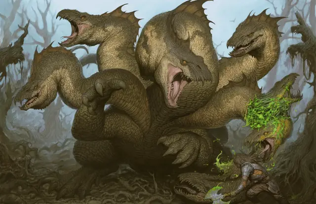

Гидра
Hydra
Огромное Чудовище, без мировоззрения

Класс Защиты 15 Инициатива +4 (14)
Хиты 184 (16к12 + 80)
Скорость 40 футов, Плавания 40 футов
| мод | спас | ||
|---|---|---|---|
| СИЛ | 20 | +5 | +5 |
| ЛОВ | 12 | +1 | +1 |
| ТЕЛ | 20 | +5 | +5 |
| мод | спас | ||
|---|---|---|---|
| ИНТ | 2 | −4 | −4 |
| МДР | 10 | +0 | +0 |
| ХАР | 7 | −2 | −2 |
Иммунитеты Бессознательный, Испуганный, Оглохший, Ослеплённый, Очарованный, Ошеломлённый
Чувства Тёмное зрение 60 футов, пассивное Восприятие 16
Языки —
Опасность 8 (3 900 опыта; БВ +3)
Особенности
Задержка дыхания. Гидра может задержать дыхание на 1 час.
Многоголовость. У гидры пять голов. Каждый раз, когда гидра получает за один ход 25 урона или больше, одна из её голов умирает. Гидра умирает, если все её головы мертвы. В конце каждого своего хода гидра отращивает по две новых головы за каждую голову, умершую с окончания её предыдущего хода, если с того момента гидра не получала урон Огнём и если хотя бы одна из её голов жива. Когда гидра отращивает новые головы, она восстанавливает 20 Хитов.
Реагирующие головы. Гидра получает по дополнительной Реакции за каждую живую голову после первой. Эти Реакции можно использовать только на совершение Провоцированных атак.
Действия
Мультиатака. Гидра совершает столько атак Укусом, сколько голов у неё есть.
Укус. Бросок рукопашной атаки: +8, досягаемость 10 фт. Попадание: 10 (1к10 + 5) Колющего урона.
Бонус мастерства +3
Среда обитания Болота, Прибрежье
Сокровища Любые
Гидра
Многоголовая змея из легенд
Гидры — легендарные убийцы героев со злобными змеиными головами и невероятной способностью к регенерации. Они всегда голодны и готовы сожрать любых существ, которые попадутся им. Как правило, после истощения своих охотничьих угодий гидры впадают в спячку, пока не появится новая добыча.
У большинства гидр пять голов, но некоторых зрелые или закалённые в боях чудовищах могут иметь больше. В народных легендах такие древние гидры сражаются с героями или стерегут богатства, затерянные в их владениях.
Гидры могут защищать как собственную территорию, так и охранять сокровища или магические предметы проклятых богов. Совершите бросок по таблице «Логово гидры» для вдохновения или выберите сами причину, почему гидра обитает там.
Логово гидры
| 1к4 | Гидра прячется здесь, чтобы… |
| 1 | Никто не мог забрать оружие павшего героя. |
| 2 | Охранять дом мудрого, но зловещего оракула. |
| 3 | Охранять волшебное растение, цветущее только раз в году. |
| 4 | Защищать источник яда, загрязняющего реку. |